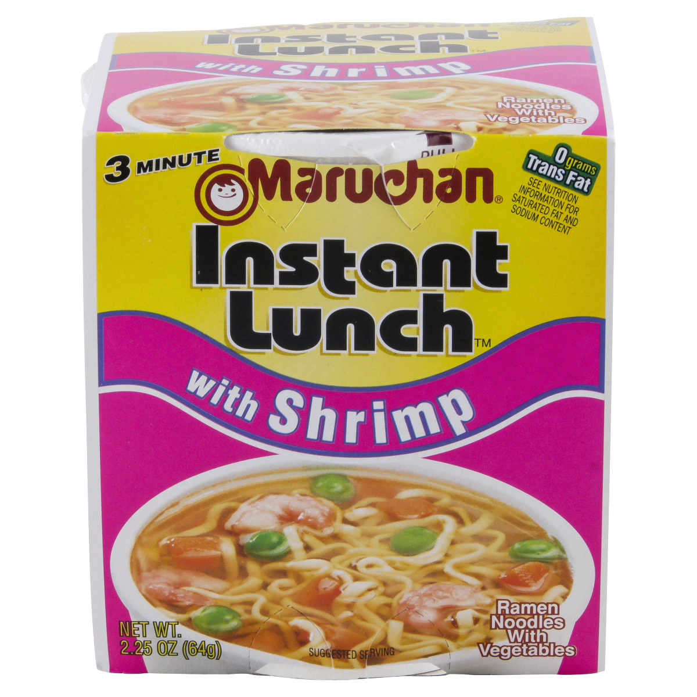
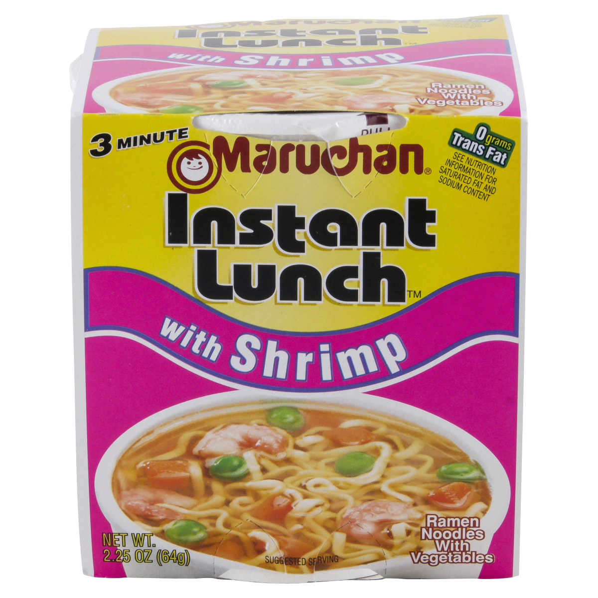

Numbers of Review Each Brand of Ramen Received

Let's go in depth with the top ten ramen brands from the first chart above.
Top Ten Ramen Brands With the Most Reviews and the Number of Star Ratings They Received

Ottogi has the lowest amount of average stars(3.4) received out of the top ten brands. Mykuali has received the most amount of average stars(4.9).

Comparing the Numbers of Ratings Received With the Average Amount of Stars Received

We can actually see from the visualisation above the number of reviews does not affect the ratings of stard for brands of ramen.
Comparing the Style of Ramen Packaging With nthe Average Amount of Stars Received.

The visualisation above showed that Ramen packed in packs turns out to receive the highest average number of star reviews out of other four styles.
Comparing the Number of Manufacturer Country with the Average Amount of Stars Received

Theres no correlation between the number of manufacturer countries the brand have with the average of star review they receive.
Top Ten Brands

 



Takeaways
Overall Mykuali received the highest amount of stars out of the ten brands. Maruchan has the least amount of stars. Nissin, which has the most number of reviews received the average of 3.8. Therefore,the number of reviews ramen brandws received does not establish a relationship with their star ratings. The more manufaturer ountries the brand have does not guarantee its quality and taste after having the example of Nissin. Packed ramen seems to be highly rated than other styles of packaging. The star ratings of ramen is decided mostly onthe taste and the packaging of it instead of the number of reviews, or how big the company is instead.